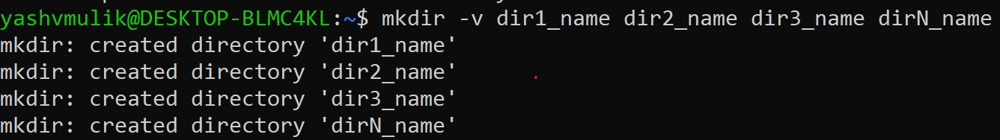

Creation of Directory/Folder in Linux
-- To create a directory we use 'mkdir' command
-- Here mkdir stands for Make directory.
-- How to use this command (syntax)?
mkdir <option> name_of_directory
-- here,option part is optional
Example 1: Create a directory named with Monday
-- Syntax: mkdir Monday

- Syntax: mkdir -v Monday

-- Here option -v stands for verbose
-- Ones command get executed it
will print a massage on screen.
-- Note: If name is already available then we will get
errro massage saying
mkdir: cannot create directory 'xxx': File exists
Creation of multiple directory at a time
Syntax:
mkdir <option> dir1_name dir2_name dir3_name dirN_name

Here, Directory names should be seperated by space
Suppose If I seperate directory names by comma or any other symbol
then what will happen?
mkdir <option> dir1_name,dir2_name,dir3_name,dirN_name

Here we don't get any error. The name provide by you,
that named directory get created. i.e. single directory get created.
Creation of Multiple directory, but there is pattern
syntax: A1 A2 A3 A4 A5 .... A10 = mkdir -v A{1..10}

Here 10 directory will get created and names will be like
A1 A2 A3 A4 A5 A6 A7 A8 A9 A10
Creation of Directory with -p option.
Suppose my requirement is - I want to create directory path as
A1/AA2/AAA3
- First way:
step 1: mkdir -v A1
step 2: mkdir -v /A1/AA2
step 3: mkdir -v /A1/AA2/AAA3

- Second way:
step 1: create a directory A1
step 2: switch to A1
cd A1
step 3: create a directory AA2
step 4: switch to AA2
cd AA2
step 5: create a directory AAA3

- Third way:
syntax: mkdir -p A1/AA2/AAA3
--here p stands for path
--when this command get executed and if parent directories are not available
then command itself create those parent directories.
--If parent directories are already available then re-use those.

Go to next page